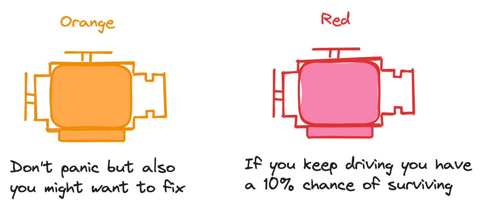
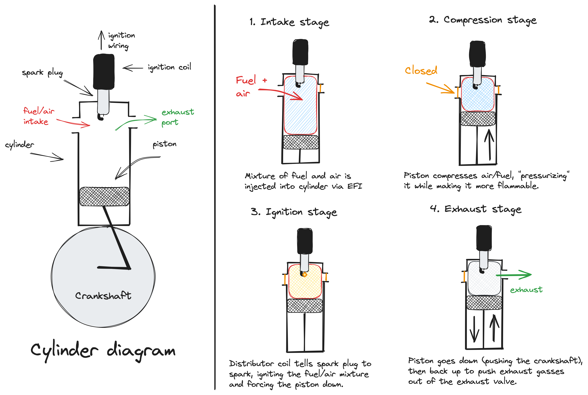
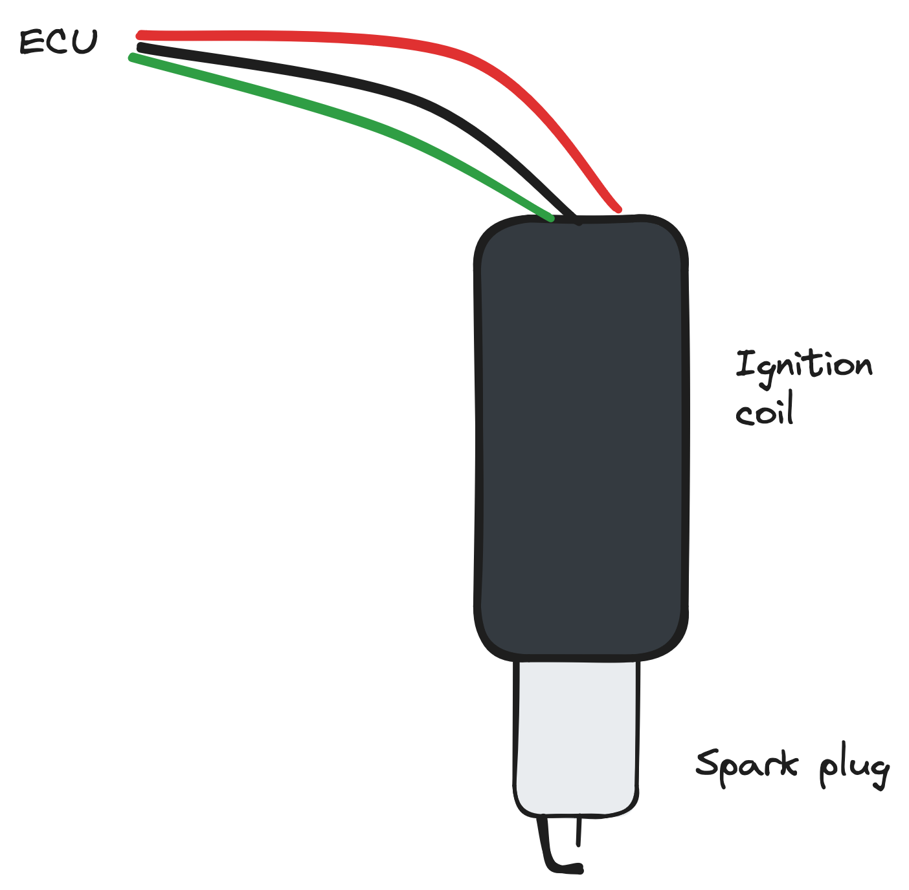
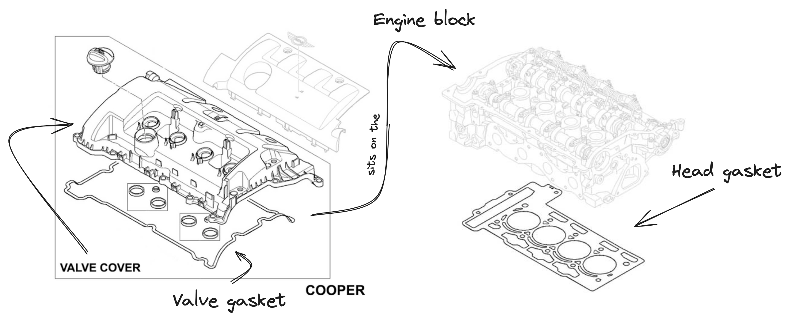

Troubleshooting a dead cylinder
When I first moved to Seattle, I picked up a 2012 Mini Clubman with the base 1.6L N16B16A engine with 100,000 miles on it. For the most part, it's been a great vehicle - though Minis have reputations for being maintenance-heavy, the previous owner took great care of it.
However, a few weeks ago, the check engine light came on while I was driving from Colorado back to Seattle, and the engine started running rough - a vibration at highway speeds which increased in intensity as I dropped my speed. Now, Mini has two forms of CELs, helpfully color-coded:

Mine was orange - so, whatever the issue is, the ECU considered it bad, but not engine-threateningly so. Still - I noticed the car was running a bit rough by now, and wanted to know what was up. I drove up to an auto-parts store and pulled the OBD-II diagnostic codes that the ECU supplies whenever the CEL-light is toggled, which yielded four codes:
P0300: Cylinder Misfire, Several CylindersP0301: Cylinder 1 Misfire DetectedP0303: Cylinder 3 Misfire DetectedP0304: Cylinder 4 Misfire Detected
Symptoms I noticed included rough idle, rough acceleration, significantly lower power than I was used to, and the above DTCs. This issue appeared while driving (rather than during some maintenance), which means something likely gave way while under stress.
This, and the codes pulled, implied the issue was somewhere in my combustion.
I opened up the engine and started off by pulling the ignition coils from the spark plugs to try and isolate it. Were all the cylinders misfiring? What happens if I removed the ignition plugs? Would it cause a change in the engine performance? Pulling coils 4,3 and 2 instantly resulted in an even lower idle RPM - implying those coils & plugs worked more or less alright. Pulling ignition coil 1, however, resulted in no change in the idle RPM.
Cylinder 1 wasn't just misfiring - it wasn't even firing in the first place!
I tried replacing the 1st spark plug itself, but again - no change. At this point, I was out of tools, time and at the limit of my combustion troubleshooting skills - so I bit the bullet and decided to just drive back to Seattle on my remaining 3 cylinders.
To avoid having unburned fuel getting thrown into the catalytic converter (bad), I unplugged the first fuel injector that supplied fuel to cylinder 1. Surprisingly, the engine was able to run alright on 3 cylinders, managing to keep a steady 80 mph most of the way ... though, fuel efficiency was pretty awful compared to all 4, and hills were disagreeable.
Now I'm back in Seattle - let's troubleshoot.
Observations
- Cylinder 1 isn't working - pulling the ignition coil and/or disabling fuel to it results in the same performance as with both installed.
- Disabling the fuel injector while the ignition coil was plugged in resulted in the engine starting, then stopping itself after a few moments.
- Disabling the fuel injector with the ignition coil unplugged resulted in the engine starting and continuing to run.
- Swapping distributor coils does not affect the issue.
I've often found starting from the most basic level and gradually isolating the problem from there works best when it comes to complicated systems - so let's start with a refresher on internal combustion engines.
Regarding Combustion
Here's a simplified diagram of what goes on in a cylinder:
 The cylinder needs four things to achieve a successful reaction:
- Fuel - component 1 of a combustion reaction.
- Air - component 2 of a combustion reaction.
- Spark - to ignite the air/fuel mixture (energy for the combustion reaction).
- Compression - pressurizes the sparse fuel/air mixture to approx. 160 psi, increasing the density and making it much more flammable.
Of note: the higher our compression (pressure) at the spark stage, the less fuel we need to successfully cause an ignition since the molecules are closer together - therefore, higher compressions generally result in higher gas mileage than lower. On the flip side, the crankshaft needs to work harder to compress the chamber - so there's a middle ground to find.
The fuel/air mixture is supplied by the fuel injector, spark by the spark plug & distributor coil, and compression from the piston maintaining a tight seal with the chamber itself. We'll test each one to make sure they work, starting with the easiest to test (spark) and moving to the hardest (fuel/air).
Spark
We'll start with spark.
 The N16B16A has 4 ignition coils set directly on the plugs themselves. Each ignition coil is controlled by the ECU, but the Haynes manual doesn't have a wiring diagram to indicate exactly how.
With only 3 wires, likely one
+12V, one isGND, and the third a data line to tell the plug to fire.
-
Replace spark plug, test
- Result: No change
-
Check distributor coil, swap with other plug
- Result: No change
-
Check wiring leading to ECU - might be broken?
- Note: This would involve stripping wires and testing for continuity, so I'll come back to this after working through some other basic tests.
Compression
-
Run a compression test on cylinder 1. Should be ~166 psi according to the Haynes manual.
- Links:forums post 1, forums post 2, article 1
- Result: 38 psi
-
Test cylinder 2 to provide a comparison.
- Result: 180 psi
Compression is very low on cylinder 1. Following the Haynes manual, I added about a teaspoon of oil to cylinder 1 and retested to see if it was a piston or gasket/valve issue.
Ref. Haynes: If the compression increases after the oil is added, the piston rings are likely worn. If it doesn't increase significantly, the leakage is occurring at the valves or head gasket. Leakage past the valves might be caused by burned valve seats and/or faces or warped, cracked or bent valves.
If two adjacent cylinders have equally low compression, strong possibility the head gasket between them is blown - coolant in combustion chambers or crankcase would verify this.
Fortunately for my wallet, the compression didn't go up - so likely not a piston issue. Unfortunately, that means I still need to isolate it to either the valves or head gasket. I'm inclined to believe it may be the inlet / exhaust valves - were it the head gasket I might smell coolant in the exhaust, and the thinnest (and most likely) breakage spot would be between cylinder 1 and cylinder 2 ... i.e. we'd expect to see a low compression in cylinder 2 with a head gasket issue.
